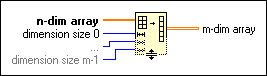

Reshape Array Function
Owning Palette: Array VIs and Functions
Requires: Base Development System
Changes the dimensions of an array according to the values of dimension size 0..m-1.
This function reads the array data in memory from left to right, row by row and populates the reshaped array the same way. For example, if you pass a 2D array of 8 elements, 2 columns of {0,1,2, 3}, to this function with two dimensions defined with sizes of 2 and 4, respectively, the function returns an array containing {{0,0,1,1}, {2,2, 3, 3}}. The connector pane displays the default data types for this polymorphic function.

 Add to the block diagram Add to the block diagram |
 Find on the palette Find on the palette |